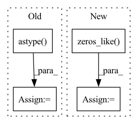

Pattern ID :6372

Before Change
w_percentile = np.percentile(w_copy, percentile)
b_percentile = np.percentile(b_copy, percentile)
new_w_mask = torch.Tensor((w_copy >= w_percentile).astype(int))
new_b_mask = torch.Tensor((b_copy >= b_percentile).astype(int))
self.w_mask = new_w_mask
self.b_mask = new_b_mask
After Change
w_copy = np.abs(self.w.detach().numpy())
b_copy = np.abs(self.b.detach().numpy())
new_w_mask = np.zeros_like(w_copy)
new_b_mask = np.zeros_like(b_copy)
for task_num in range(self.num_tasks):
if task_num != 0:
for prev_idx in range(task_num - 1):
w_copy[task_num][new_w_mask[prev_idx] == 1] = 0
b_copy[task_num][new_b_mask[prev_idx] == 1] = 0
w_percentile = np.percentile(w_copy[task_num], percentile)
b_percentile = np.percentile(b_copy[task_num], percentile)
new_w_mask[task_num] = (w_copy[task_num] >= w_percentile).astype(int)
new_b_mask[task_num] = (b_copy[task_num] >= b_percentile).astype(int)
self.w_mask = torch.Tensor(new_w_mask)
In pattern: SUPERPATTERN
Frequency: 3
Non-data size: 4
Instances
Fragment ID: 22212626
Project Name: beyond-ml-labs/beyondml
Commit Name: 03dd7b87e47d75ba5a7317f31e1ff50b340898a7
Time: 2022-06-02
Author: 77127228+jacobrenn@users.noreply.github.com
File Name: mann/burning/layers/MultiMaskedConv2D.py
M Class Name: MultiMaskedConv2D
N Class Name: MultiMaskedConv2D
M Method Name: prune(2)
N Method Name: prune(2)
M Parent Class: torch.nn.Module
N Parent Class: torch.nn.Module
M File Name: mann/burning/layers/MultiMaskedConv2D.py
N File Name: mann/burning/layers/MultiMaskedConv2D.py
M Start Line: 98
M End Line: 107
N Start Line: 85
N End Line: 103
'>
Before Change
w_percentile = np.percentile(w_copy, percentile)
b_percentile = np.percentile(b_copy, percentile)
new_w_mask = torch.Tensor((w_copy >= w_percentile).astype(int))
new_b_mask = torch.Tensor((b_copy >= b_percentile).astype(int))
self.w_mask = new_w_mask
self.b_mask = new_b_mask
After Change
w_copy = np.abs(self.w.detach().numpy())
b_copy = np.abs(self.b.detach().numpy())
new_w_mask = np.zeros_like(w_copy)
new_b_mask = np.zeros_like(b_copy)
for task_num in range(self.num_tasks):
if task_num != 0:
'>
Fragment ID: 22212624
Project Name: beyond-ml-labs/beyondml
Commit Name: 03dd7b87e47d75ba5a7317f31e1ff50b340898a7
Time: 2022-06-02
Author: 77127228+jacobrenn@users.noreply.github.com
File Name: mann/burning/layers/MultiMaskedDense.py
M Class Name: MultiMaskedDense
N Class Name: MultiMaskedDense
M Method Name: prune(2)
N Method Name: prune(2)
M Parent Class: torch.nn.Module
N Parent Class: torch.nn.Module
M File Name: mann/burning/layers/MultiMaskedDense.py
N File Name: mann/burning/layers/MultiMaskedDense.py
M Start Line: 43
M End Line: 52
N Start Line: 40
N End Line: 58
'>
Before Change
new_z_matrix = np.zeros(rule_matches_z.shape)
for index, sample in enumerate(rule_matches_z):
neighbors = indices[index].astype(int)
neighborhood_z = rule_matches_z[neighbors, :]
activated_lfs = neighborhood_z.sum(axis=0) // Add all lf activations
After Change
if isinstance(rule_matches_z, ss.csr_matrix):
new_z_matrix = ss.lil_matrix(rule_matches_z.shape, dtype=np.int8)
else:
new_z_matrix = np.zeros_like(rule_matches_z)
// make sure initial matches are preserved
new_z_matrix[rule_matches_z != 0] = 1
'>
Fragment ID: 22212621
Project Name: knodle/knodle
Commit Name: 5218b53c52c6e69dc1c6576766b7c540822a4298
Time: 2021-03-10
Author: 19635192+marina-sp@users.noreply.github.com
File Name: knodle/trainer/utils/denoise.py
M Class Name: AnonimousClass
N Class Name: AnonimousClass
M Method Name: activate_neighbors(2)
N Method Name: activate_neighbors(2)
M Parent Class:
N Parent Class:
M File Name: knodle/trainer/utils/denoise.py
N File Name: knodle/trainer/utils/denoise.py
M Start Line: 14
M End Line: 25
N Start Line: 22
N End Line: 51